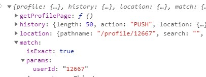

До этого времени мы использовали вот такую схему
У нас есть некий BLL где хранятся данные, на соснований этих данных мы отрисовываем компоненты (UI). Но на самом деле все это время у нас был как бы еще один state. Этот state хранился в URL строке, ведь в зависимости от этого значения мы отображали с помощью Router тот или иной компонент.
Допустим что у нас есть страница которая отображает список пользователей. Каждый пользователь (ну или аватарка пользователя) это ссылка NavLink которая меняет строку URL-а, а в зависимостри от значения URL React отрисовывает нужную компоненту. В итогде кликая по пользователю меняется URL и соответственно загружается компонента с профилем страницы.
Обратим внимание на то, что в атрибуте to мы добавили то, что в адресе еще отображается ID пользователя.
Задача UI компоненты считать этот ID и передать его контейнеру, что бы тот с помощью axios выполнил GET запрос на сервер с указанием id пользователя в URL адресе.
Для того что бы прочитать URL мы будем использовать фунцию withRouter
withRouter - принимает в качестве аргумента компоненту и возвращает новую компоненту, на которая имеет все теже пропсы и свойства что и предыдущая но в добавок к этому она получает пропсы которые доают возможность считывать информацию из URL
Теперь встает вопрос, какую именно компоненту нужно передавать функции withRouter? рассмотрим нашу схему:
Согласно схеме App.js у нас отрисовывает ProfileContainet - контейнерную компоненту, которая получена в результате функции connect библиотеки react-redux. В эту компоненту приходит state, dispatch и action creator из reducer. Контейнерная компонента отрисовывает классовую компоненту, которая так же считается контейнерной для компоненты Profile. Контейнерная компонента имеет метод жизненного цикла componentDidMount который выполняет GET запрос на сервер с помощью метода axios. В URL адресе мы обязательно должны указывать ID пользователя профиль которого нам вернет сервер. Значит id пользователя должна получить именно классовая компонента, что бы выполнить правильный запрос на сервер, поэтому функции withRouter мы передадим именно классовую компоненту, а контейнерной уже передадим результат функции withRouter
и уже эту новую компоненту передадим в connect
Теперь у классовой компоненты появятся новые пропсы
Среди новых пропсов нам понядобится match у которого есть свойства: isExact и params
О чем говорит isExact? в компоненте App.js мы отрисовываем компоненты используя роутинг (Route)
У компоненты Route есть атрибут path - если URL адрес соответствует значению path то отрисовывается компонента которая указана в атрибуте render. Но по нажатии по ссылке (пользователю) в NavLink мы указали `/profile/${user.id}` а это значит что URL адрес соответствует значению path компонента Router лишь частично. Вот свойство isExact и говорит нам соотвествует ли URL значению атрибута path. В нашем случае значение false, не соответсвует. Что бы это исправить нужно добавить параметр атрибуту path компоненты Router. Вот как это выглядит:
Т.е. после дефолтного пути ставим слеш, двоеточие и имя параметра
Теперь если посмотреть на пропсы лассовой компоненты, то мы увидим вот такую картину:
Все что нам остается это в axios запросе использовать значение ID полученное через пропсы
Объявляем переменную idUser и с помощью строковой интерполяции помещаем ее значениев URL
Теперь если открыть просто ссылку /profile у нас ничего не загрузится. Что бы это исправить нам нужно сделать параметр userId у Router не обязательным, для этого в конце path ставим знак вопроса
А перед axios запросом ставим условие, если idUser вернет false то присваиваем значение по умолчанию - например ID своей страницы.